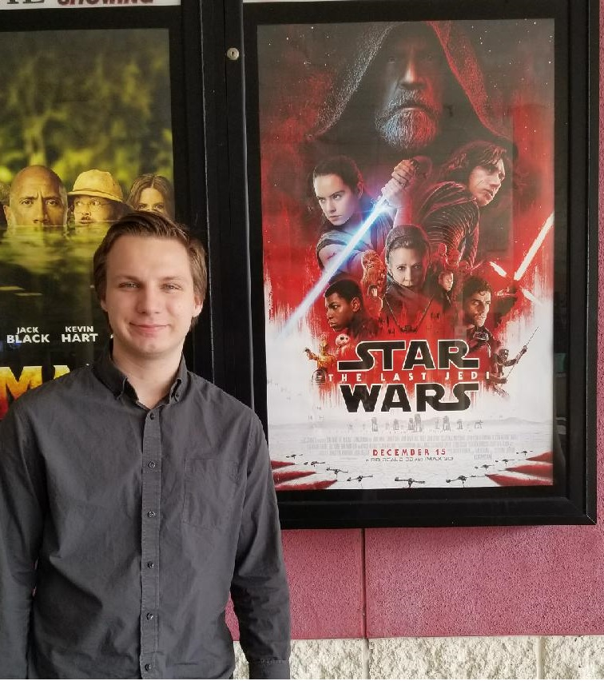

Before I begin, full disclosure; this write up will be full of spoilers on Star Wars: The Last Jedi.
If you have not seen the movie yet please stop reading and come back once you’ve seen it. I don’t want
to be the person that ruins anything for you.
There’s a new Star Wars movie in the theatres, I should be used to saying that by now but I’m not. Even
with a new release every year for the past three years it still doesn’t feel real until I am sitting right
there in the theatre. This time around it’s Episode VIII: The Last Jedi. The Last Jedi is of course a sequel
to 2015’s Star Wars Episode VII: The Force Awakens and it takes place just moments after the last scene of that
movie. It’s been a few days since I’ve seen the movie, I’ve been wrapping my head around how I feel about it.
I know I liked it, but I also know that it had some flaws that are hard for me to ignore. I really need to see it
a few more times to really know how I feel about it, but like the title says these are just my immediate thoughts on the film.
Let’s start with the good. Mark Hamill was amazing in the movie as Luke Skywalker, he completely stole the show. All these years
waiting for the return of Luke Skywalker did not disappoint. Not counting Luke’s cameo at the end of The Force Awakens; Mark Hamill
has not played Luke Skywalker since 1983, 34 years ago! But it felt like I was watching the same character from the original Star Wars
movies, it’s like Mark Hamill never stopped doing the role! Although it felt like the same character at the core; there were some differences,
and obviously after 34 years a character is going to be a little bit older. Add complete isolation to that and Luke turned out a little bit grumpy
in his older age but nothing completely out of character.
Adam driver again did a great job as Kylo Ren. It’s not easy creating a believable villain that has emotion but doesn’t come off as whiney.
His struggles feel authentic and his pain feels real. Out of all the new characters in the trilogy Kylo Ren is a favorite of mine. Daisy Ridley
was good again as Ray, I think they did a better job with her character in The Last Jedi then in The Force Awakens.
She felt like she had a little bit more emotions this time around. She also had an actual obstacle she had to overcome in this film,
many thought Ray was a bit of a Mary Sue in the last film. Throughout the movie she constantly had to fight to convince Luke Skywalker to help aid
the Resistance and to teach her the way of the Jedi.
It was as heartwarming as it was sad to see Carrie Fisher as Princess Leia, now General Leia. She had a bit of a larger role in
this one then she did in The Force Awakens but not by much. From what I understand the plan was to give the spotlight to one of the original
characters for each movie. So for the Force Awakens there was Hon Solo, The Last Jedi was all about Luke, and the next film would have had Leia
as a main focus. Sadly because of Carrie Fisher’s passing we won’t see her in the next film. It was still a delight to be able to watch her in
the Last Jedi, even though one of her scenes was…a bit strange. But I’ll get to that later on. Yoda showing up in his force ghost presence as a
surprise was awesome, I was not expected it at all! He looked amazing as well. It was a great choice to bring him back in his original puppet
form from the original trilogy and even though it was short scene he played a great role and definitely felt like he belonged.
The entire film looked beautiful. The throne room scene between Kylo, Snoke, and Rey looked fantastic and the battle of Crait was a great visual treat.
While much of the film was computer animated the filmmakers still made an attempt to have a good amount of practical effects like The Force Awakens had.
Again they looked great, especially all the aliens; one of my favorite things to do while watching the movie was to look out for handcrafted aliens for
the split seconds they were on screen.
Let’s talk about the story some, I thought it was pretty good and for the most part and it felt like a story of its own, there was some pretty fair
criticism with The Force Awakens being too similar to A New Hope. The main focus in The Last Jedi was really about Rey trying to convince Luke Skywalker
to rejoin the Resistance and Rey’s connection with Kylo Ren, second to that was the Resistance attempting to escape The First Order. The Force Order has
discovered a way to track The Resistance’s ships through hyperspace; something that has previously been impossible, this makes escape for the Resistance
virtually impossible. Poe, Finn, and a new character Rose team up to create a plan to board The New Order’s ship and destroy the tracking device.
This is where things get a little messy for me. Apparently to deactivate the tracker the team will need help from one of Maz Kanata’s codebreaker associates.
He is located in the casino city of Canto Bight on the planet Cantonica. Poe and Rose go to the planet only to be caught and arrested; they are broken out
of jail by a character called DJ played by Benicio Del Toro. They board The First Order’s ship only to be caught by Captain Phasma. DJ is freed in an exchange
for information; which is the plan for The Resistance to hide out on an old abandoned base on the planet of Crait.
One problem that comes to mind is why did Poe and Rose even need to tell DJ that information? I think this entire subplot could have been polished up some.
Poe and Rose never even found the person they were originally looking for on Cantonica so that entire sequence was pointless. I think the plot would have been
stronger if the entire “find the codebreaker” plot was cut and Finn and Rose found a way to go straight to The First Order’s ship to destroy the tracker.
This would have cut down on run time and possibly would have given the chance to give more time to focus on fleshing out some of the characters, something the filmed failed to do at times.
I would also consider cutting Rose’s character completely. There are so many characters in the movie adding new ones just takes away more time from the characters that are already
established. Instead of Rose and Finn going to destroy the tracker why not have it be Poe and Finn? They had a great on screen chemistry in The Force Awakens and having them go
out on a mission together would have been a great opportunity to extend that in this movie.
Another part I think should have been done differently was Vice Admiral Amilyn Holdo’s role, another character that I think could have been left on the cutting room floor.
She took leadership of The Resistance after General Leia was hospitalized when the First Order attacked. Of course the strange scene I wrote about earlier involving
General Leia was the scene where the part of the ship she was in was destroyed leaving her exposed in open space. Only escaping death by using her force
powers which we have never seen Leia use until now, although it was hinted at all the way back from the Original trilogy Leia was possibly force sensitive.
I’m into the idea of Leia being able to use the force, but what they did with it looked really goofy. Leia used the force to float herself through
space back into the ship. It looked like Mary Poppins crashed a Star Wars movie. They should have gone with a much more subtle route, I’m not sure
what; but anything would be better then what they did.
Back to Admiral Holdo, she causes a mutiny on the ship because she appears not to have any other plan but run away. When in fact she did have a
plan and could have just communicated that plan with the crew. This causes some unnecessary disruption between the crew of The Resistance.
I think it would have been a better idea just to give General Leia a larger roll instead of introducing a new character and cut out the entire
munity bit; if Poe had gone with Finn that wouldn’t have been an issue anyway. I’m also not a fan of taking all the time to introduce
new characters only to kill them in the same movie, which of course was the case for Admiral Holdo. Her death was supposed to be heroic
and somewhat of a redemption of her character I think? But with just a few scenes of her character in this one movie wasn’t enough to make
her death feel emotional. The scene itself was awesome with the Resistance ship crashing into the First Order’s cruiser at light speed.
But they could have just of easily gotten away with saying they were able to do that with autopilot or have a droid pilot the ship.
Supreme Leader Snoke was another somewhat confusing part of the movie. There was so much build up in The Force Awakens of Snoke
being this incredible powerful source. Who was he? Where does he come from? What’s his story? Many Star Wars fans were hoping
some of these questions would be answered at least partially in The Last Jedi. Well it turns out none of these questions were
answered and it seems like we as the audience were never really supposed to care about any of this because Snoke was quickly
killed by Kylo Ren. I don’t completely mind this decision, I see why they did this; to make Kylo Ren the main focused villain
for the rest of the movie and the next film. I like this move, I just think they should have downplayed Snoke’s role slightly
in the previous film. They made him seem like too big of a deal earlier on just to kill him off later like nothing.
I’m not sure how I feel about what they did with Luke, I’m leaning towards not liking it. If he had to die this is how I would
have wanted him to die, but I don’t really understand why he had to die in the first place. Although Luke’s last scene was awesome.
Kylo Ren was completely duped by Luke’s trick and it allowed The Resistance to find a way to escape. Luke never had to leave the comfort
of his island on Ahch-To, but after helping his friends Luke faded away from his human form. I’m assuming what happened is that it took
every bit of power Luke had to create a force image of himself on Crait that afterword there just wasn’t any energy left to be able to
live on in his human form, or something like that I’m not sure it’s a bit silly. I think Luke’s death was a little bit forced and
I would have definitely preferred keeping him around for the next movie especially because of how great of a job Mark Hamill did.
Not to say Luke Skywalker won’t show up in the next movie, I’m almost positive Luke will show up again in the force ghost form to
help guide Rey; just as Obi-Wan did for Luke in the original trilogy. What’s important is that Luke died a winner. He wasn’t defeated,
he did what he knew he had to in order to let The Resistance live on; similarly how Obi-Wan died in A New Hope to allow Luke and his friends
to escape the Death Star. While Han Solo had the tragic death in The Force Awakens, Luke had the hero’s death in The Last Jedi.
The topics of Rey’s parents played an important part in this film as it did in The Force Awakens. Rey is still very adamant about
finding out who her parents are. In the movie Kylo Ren claims that Rey’s parents were nobodies and they sold Rey off when she was
young and they’re now dead in a ditch on Jaku. Obviously Kylo Ren is a Sith and may just be saying anything he can to try to convince
Rey to join him on his path of darkness. There seems to be a theme of letting go of the past throughout this film so it’s possible Kylo
could be telling the truth but I’m not convinced. It could be possible the filmmakers just wanted to throw out this storyline to cut up
loose ends but I believe we’ll be hearing more about Rey’s parents in the next film, especially because J.J. Abrams is coming back to write
and direct Episode 9 and similarly to Steven Spielberg; J.J. is very into telling family related story lines.
Captain Phasma appeared once again, briefly. Another character that I’m not really sure what the point of was or what they’re
trying to do with. In the marketing for The Force Awakens she was built up to be a big character and when the movie was released she only
had a couple scenes; an introductory scene and a scene later on where she is held up by Finn. It was a bit disappointing because
Gwendoline Christie is just such an amazing actress and I really wanted to see what they could do with her in Star Wars.
The Last Jedi was another chance to be able to give her a bigger role and let he character shine, and of course they didn’t.
I don’t know this for sure but I am almost positive she had less screen time in The Last Jedi then in The Force Awakens.
Not only does she have less screen time, but they kill her off! Or at least it appears they did; you never really know in
movies like these, I’d say theirs a 50/50 chance she’ll be back. It feels like a situation where they filmed more scenes
for the character but they ended up getting cut later on in post-production, something that is common when making films.
If they do use Captain Plasma in Episode IX I hope they give her the bigger role she deserves.
Of course I can’t talk about The Last Jedi without mentioning the Porgs. The porgs are the newly introduced creature
that’re basically in the movie just to sell a bunch of toys. They’re small penguin chicken creatures that inhabit Ahch-To.
They didn’t end up being as annoying as I thought they would be. The design wasn’t bad; and they were cute enough, admittedly they
got a few laughs from me here and there. I just think maybe they could have shown up in just one or two less scenes then they
did, maybe keep them just on Ahch-To. Reportedly porgs were created because the filming location for Ahch-To was a habitat for
puffins. The filmmakers decided it would be easier CGI’ing over them rather than digitally remove them, which I think is hilarious
and awesome.
I know it reads like there was a lot I didn’t like in The Last Jedi but I did enjoy the film, even though there were some
pretty decent sized problems and some other smaller things that I can’t help myself but to dig into. Overall I did really
like the movie, it was a fun watch and it was for the most part a strong Star Wars experience. It’s not easy to try to
attach an audience to new characters in such a beloved franchise but I am definitely hooked on Rey and Kylo’s story
and I’m excited to see where it goes, it’s going to be a long two years waiting for the next installment.
Between Episode VIII and episode IX we’ll have what I call the “intermission movie” about Han Solo’s beginnings.
It seems clear that Disney plans to release a new Star Wars movie of some kind every single year for the foreseeable
future. Whether this is a good or a BAD thing is a topic for a whole other article. The Last Jedi had its issues,
but the force is still strong with this one.

Initial thoughts on Star Wars: The Last Jedi